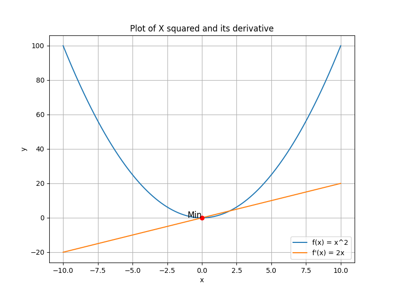

Questions
Will other lessons be as difficult?
You should find other lessons on here easier. That one was probably the toughest one if you're not mathematically inclined. On the flip side, there may be some students that absolutely loved what we covered. In that case, keep an eye out for the very last lesson when I discuss where you can go next after this course finishes up.
Are we starting graphing this week?
We are, we will be looking at a library called Matplotlib this week. This is a fairly popular Python library among data scientists. This will allow you visualise what we have looked at the past fortnight and get a better understanding of what we're working with. Diagrams are incredible for aiding intuition.
What graphs can I create with Matplotlib?
We will mainly focus on scatter plots and line plots here. You can also create other graphs like bar charts, stack plots, histograms, pie charts and even 3D graphs. If you can think of data suitable for the other types of graphs then check out the documentation here.
Code Examples
Let's dive right in and look at an example. We will import the library and use some of its functions in conjunction with NumPy to create some easy plots. As always, there will be a paragraph below explaining what each function does.
import matplotlib.pyplot as plt
import numpy as np
x = np.linspace(2, 8, 3)
y = 2*x
fig, ax = plt.subplots()
ax.plot(x, y)
ax.set(xlim=(0, 8), xticks=np.arange(1, 8),
ylim=(0, 20), yticks=np.arange(1, 20))
plt.show()Let's take a good look at this code and see how it produces a graph. The start of the code imports relevant libraries. We have both an x-axis and a y-axis on this graph. The x values we want to plot are 2, 5 and 8. The y values we want to plot are double the x values; these are 4, 10 and 18. The next few lines create the actual plot rather than supplying data. Creating subplots is a more conventional feature when you have more than one plot you wish to show. The next line plots x and y as a line plot. We have two lines together which set the axes. The limits will show us how large/small both axes are. The ticks will display markers on the axes. They show numbers from 1 to 8 on the x-axis and 1 up to 20 on the y-axis. The last line will show our plot.
Let's look at a more complicated graph. I will take x2, differentiate it which gives us 2x, and plot the min point. The graph will have a title, the axes will be titled. There will be a legend in the corner and min point will be labelled.
import numpy as np
import matplotlib.pyplot as plt
from sympy import *
x = symbols('x')
y = x**2
y_prime = diff(y, x)
f = lambdify(x, y, 'numpy')
f_prime = lambdify(x, y_prime, 'numpy')
x_values = np.linspace(-10, 10, 400)
y_values = f(x_values)
y_prime_values = f_prime(x_values)
min_point = (0, f(0))
plt.figure(figsize=(8, 6))
plt.plot(x_values, y_values,
label='f(x) = x^2')
plt.plot(x_values, y_prime_values,
label="f'(x) = 2x")
plt.plot(*min_point, 'ro')
plt.text(min_point[0], min_point[1],
'Min', fontsize=12, ha='right')
plt.legend()
plt.grid(True)
plt.title('Plot of X squared and its derivative')
plt.xlabel('x')
plt.ylabel('y')
plt.show()

Exercises
Lesson 45 Solution
You're probably not alone if you found the maths of this lesson tricky. Here's a review of last week's assignment. Well done to you if you managed to figure out how to get the bonus questions working!
- Differentiate x2 + 5.
- Print the function returned from differentiating x2 + 5.
- Pass in 3 as a parameter to this function.
- Bonus: Pass in 3, 6, 9 as parameters into this function in one line.
- Integrate x + 5. Assume there is no constant of integration here (c = 0).
- Print the function returned from integrating x + 5.
- Pass in 4 as a parameter to this function.
- Bonus: Pass in 2, 4, 6 as parameters into this function in one line.
from sympy import *
import numpy as np
x = Symbol('x')
y = x**2 + 5
yprime = y.diff(x)
print(yprime)
f = lambdify(x, yprime, 'numpy')
print(f(3))
three_array = np.array([3, 6, 9])
print(f(three_array))
yprime = x + 5
c = 0
y = integrate(yprime, x) + c
print(y)
f = lambdify(x, y, 'numpy')
print(f(4))
parameter_array = np.array([2, 4, 6])
print(f(parameter_array))2*x
6
[ 6 12 18]
x**2/2 + 5*x
28.0
[12. 28. 48.]
Lesson 46 Assignment
We will look at creating graphs as our homework this week. We won't look at anything as complicated as the second example from today. Follow the steps below and see what you can come up with. Remember that you may need to look at documentation to complete the assignment. This is very common in the world of work as well as any college level work you will complete.
- Create a number of x values using the linspace function.
- Create a function y = sin x.
- Lambdify your function.
- Plot this in the colour yellow.
- Find the minimum and maximum points on this graph. (Hint: Differentiate y)
- Plot these using a purple triangle for each point.
- Add a title to this graph.